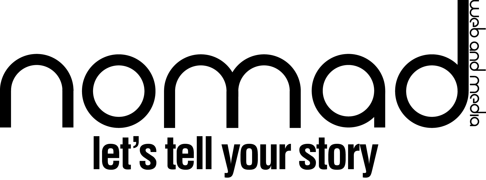
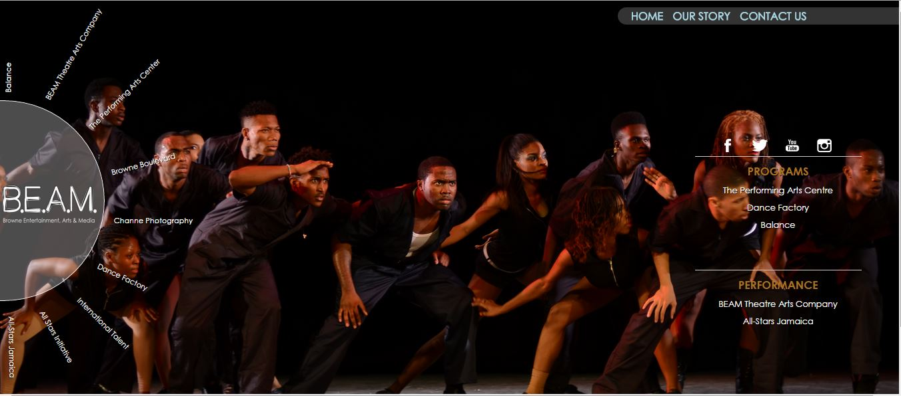
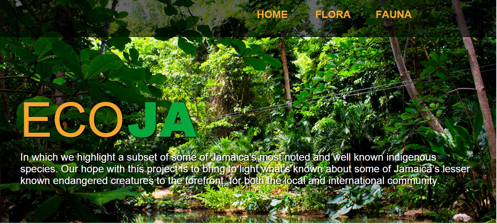

working in the digital space at a cross-roads between web, graphic, and media design for personal and commercial projects.
-
PROJECT: B.E.A.M. Jamaica
company portal site for Browne Entertainment Arts and Media. A performance company located in Kingston Jamaica."/> -
PROJECT: ECO-JA
A personal sample project for a fictional environmental agency."/>
VIDEO
A nisi ultrices aenean, nunc aliquet proin odio augue sit cras enim sagittis, penatibus sed, amet, hac amet nec? Porttitor aenean hac, porta scelerisque a habitasse amet a, ultrices lacus pulvinar non eu! Odio odio duis. Eu a purus lectus? Egestas aenean ultricies odio in.OUR STORY
We believe that there’s a story to be told in everything done.That in each story there always exists a narrative that
encapsulates what happens to bring too reality everything around us.
This experience of moving things from concept to fruition and having a
passion for seeing there development expands beyond the realm of business.
It is a predominant thought process adhered too, a way of life
that we subscribe For us, it’s all about the journey, the in-betweens
of getting from A to B and the magic that takes place on the way.
We’re all about improvement and growth here,
having a kaizen* thought process to our work and lives..
*Kaizen is the practice of continuous improvement.
Kaizen was originally introduced to the West by Masaaki Imai in his book Kaizen: The Key to Japan's Competitive Success in 1986.